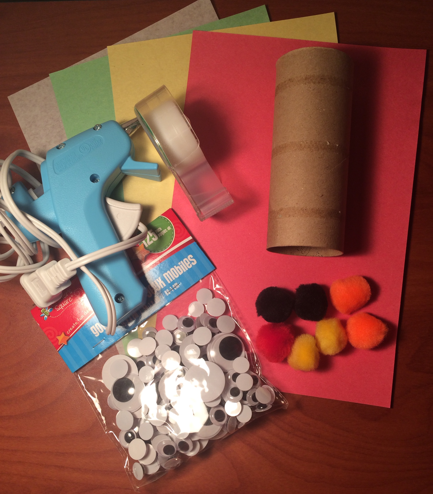
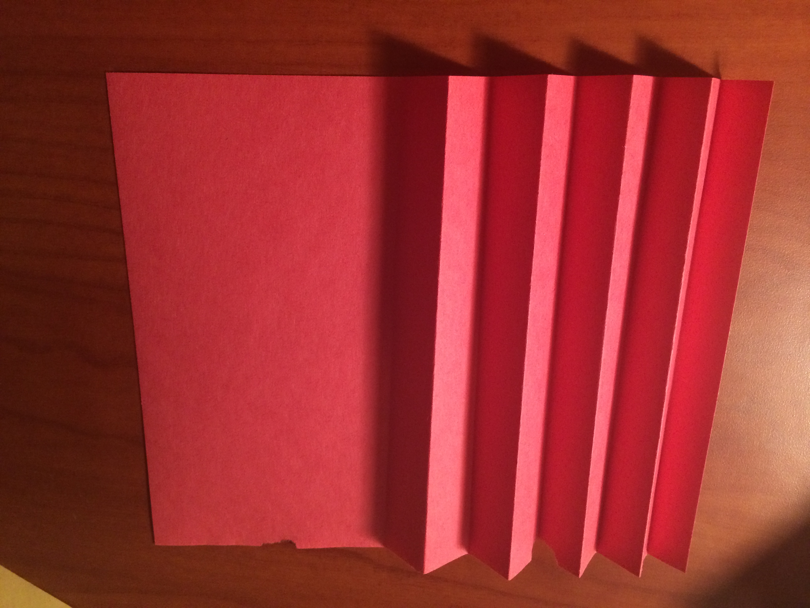
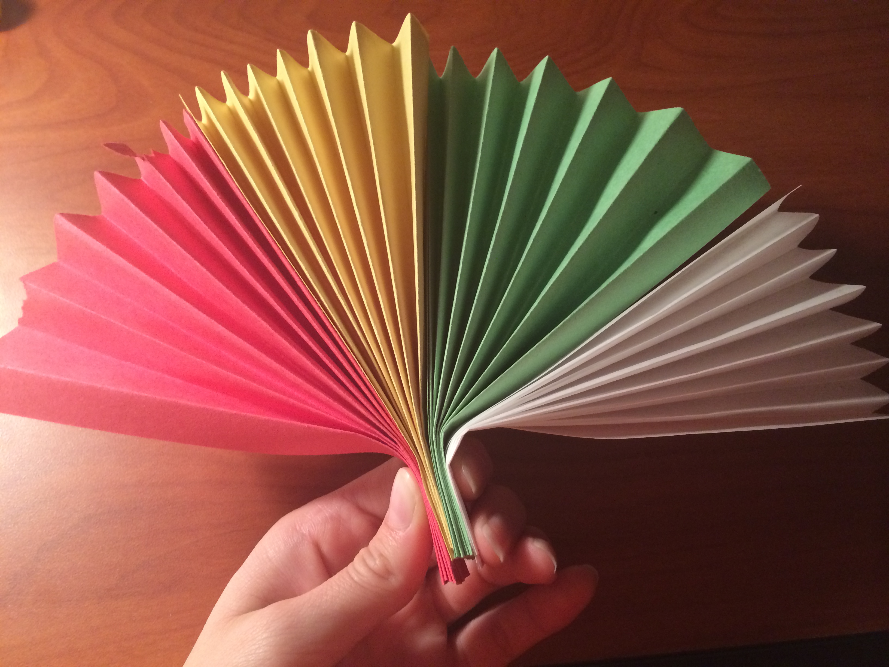
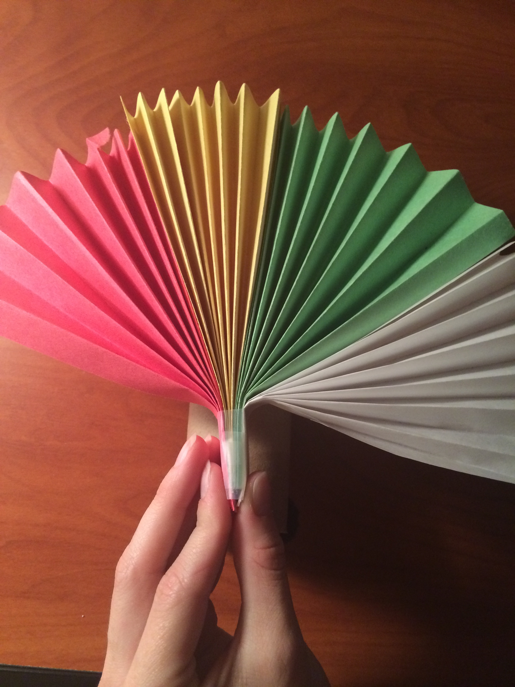
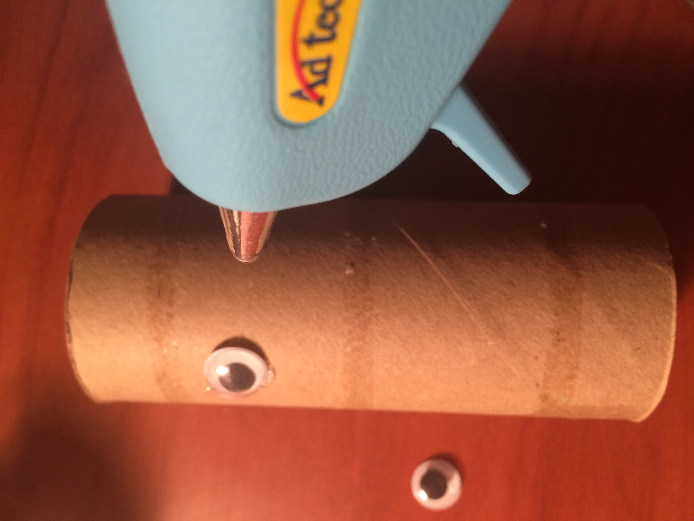

How To Make a Cardboard Thanksgiving Turkey
Looking for an easy holiday craft? Here are a few simple steps to help you make a colorful and fun turkey to celebrate Thanksgiving!
Materials
- 1 toilet paper roll
- 4 pieces of construction paper(any color)
- Tape
- Hot glue gun
- 2 googly eyes
- Fuzz balls (1 red, 1 orange, 2 black)
Steps
| Step 1 | Gather all of the materials |  |
| Step 2 | Lay scrap paper near your work station | |
| Step 3 | Place hot glue gun on scrap paper; ask an adult to turn on the hot glue gun, move on to step 4 while you wait for it to heat up (about 5 minutes) | |
| Step 4 | Take a sheet of construction paper and fold it accordion style, alternating folds forward and backward. Do this with all four pieces of construction paper |  |
| Step 5 | Cut piece of tape and set aside for next step | |
| Step 6 | Put together the folded papers and squeeze the bottoms together with your fingers |  |
| Step 7 | Use the piece of tape to tape together the four folded papers and squeeze the bottoms together with your fingers |  |
| Step 8 | Choose two googly eyes for your turkey | |
| Step 9 | Use the hot glue gun to attach the googly eyes to the front/center of the toilet paper roll, press and hold in place for 3 seconds |  |
| Step 10 | Get the orange fuzzball for the nose of your turkey |

{kind=link}